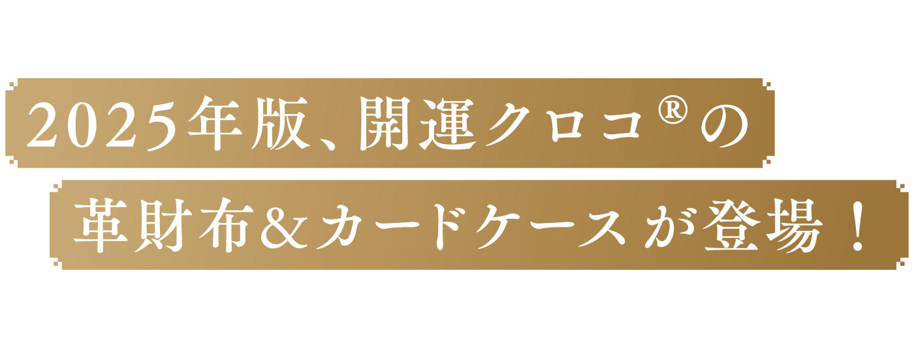
こんにちは、柳生忠司です。
今年も開運クロコ® の革財布とカードケースをリリースすることになりました。
これまでにもクロコダイルの財布をプロデュースしてきましたが、私がこの素材にこだわるのには、 いくつか理由があります。
ひとつは、その美しさ。 私は小物を選ぶ際、 美しさにこだわっています。
一般的な開運財布は、全面金色であったりと、どちらかというとスピリチュアル寄りのものが多いように思います。
しかし、私がプロデュースするものは、おしゃれなものにしたいという思いがありました。
スピリチュアルな部分を抜きにしても価値のある、デザインや素材、ファッション性というところで、「これはいいものだね」 「おしゃれだね」と思っていただけるものを作りたかったわけです。

クロコダイルという素材自体が大変貴重なものであると いうこと、そしてワニが持つ生命力の強さも、私がこの素 材にこだわっている理由のひとつです。
生命力が強い素材は、入魂する際にも波長が合いやすく、 念が入りやすいのです。 クロコ柄の型押しをした合皮素材 の財布と、この「開運クロコ®の革財布」は、同じものの ように見えるかもしれませんが、エネルギーがまったく違 います。
もちろん合皮素材のものでも入魂は可能です。 しかし、 神様の依り代としては弱いため、大きなエネルギーを十分 に受け止めることができません。
ですから素材自体が神様の依り代となるため、生命力の 強いものほど、エネルギーをしっかり受け止める器となる のです。
昔からワニやヘビ、オーストリッチなどが貴重とされていたのも、素材が持つ生命力の強さを、 先人たちが無意識 に感じ取っていたからだと思います。
クロコ革の魅力は、見た目が美しく、強い生命力と大き なエネルギーの器を持ち、 一生使えるほどの丈夫さにあり ます。使い込むほどに色合いが変わり、ツヤが増し、世界 にひとつだけの風合いへと育っていく――それこそが、私 がクロコ革を大好きな理由です。

かれこれ3年ほど、 クロコダイルという素材にこだわっ てプロデュースしてきましたので、 自分自身でもその良さ を見る目が養われてきたと自負しています。
今回の「開運クロコ®の革財布」「開運クロコ®のカード ケース」は、ナイルクロコダイルの革を使用しています。
ナイルクロコダイルの特徴は、なんといってもそのうろ こ模様の美しさです。
クロコ革の模様は、 竹の節のように整然と並ぶ 「竹斑(た けふ)」、丸みを帯びた上品な「丸斑(まるふ)」 もしくは「玉 斑(たまふ)」といいます。
クロコ革の魅力は、見た目が美しく、強い生命力と大き なエネルギーの器を持ち、 一生使えるほどの丈夫さにあり ます。使い込むほどに色合いが変わり、ツヤが増し、世界 にひとつだけの風合いへと育っていく――それこそが、私 がクロコ革を大好きな理由です。
まるで職人がデザインしたかのように規則正しく、美し く並ぶこの模様は、すべて自然が生み出したもの。ひとつ として同じものはなく、それぞれが唯一無二です。それゆ え、クロコダイルは長年に渡りエルメスなどの老舗ブラン ドなどでも愛されてきました。
「開運クロコ®の革財布」「開運クロコ®のカードケース」 のクロコ革も本物だからこそ、それぞれに柄の違いや小さ な傷があります。
地面を這うワニは、どうしてもお腹が擦れて革に傷がつ いてしまいます。 そして、 しわや傷、血管の跡がそのまま 残っているということは、 本物のワニの革を使っている証 拠です。
大きな傷がある部分は使用していませんが、ある程度ま では採用しているのも、ワニの力強さを感じて欲しいから でもあります。
ひとつひとつが違う表情を持っているがゆえに、本物の クロコ革は、「オンリーワン」なのでしょう。
今回の「開運クロコ ® 財布」「開運クロコ ® カードケース」 は、高品質なクロコ革を取り扱う革専門の卸商から仕入れ、 日本の熟練した職人に製作を依頼しました。
革製品の世界では、 「取り都合」といって、限られた革 の中でどのように美しい模様を切り取るかが重要です。
今回の職人は、 その 「取り都合」の技術が非常に優れて おり、芸術的な美しいクロコの模様が際立つ作品になりま した。
さらに、革をとても薄く仕上げる技術にも長けており、 なんと裏側からでも模様がわかるほど繊細な仕上がりで、 クロコ革の強さを保ちながら非常に軽く仕上げることに成 功しました。
まさに日本の職人だけが持つ高い技術とこだわりが詰 まった、他にはない特別な逸品です。
品質の面でも、百貨店で販売されている商品以上の仕上 がりであると、自信をもっておすすめできます。 今回ご提供するクロコ製品は、世界最高クラスのレベル に達しているといえるでしょう。
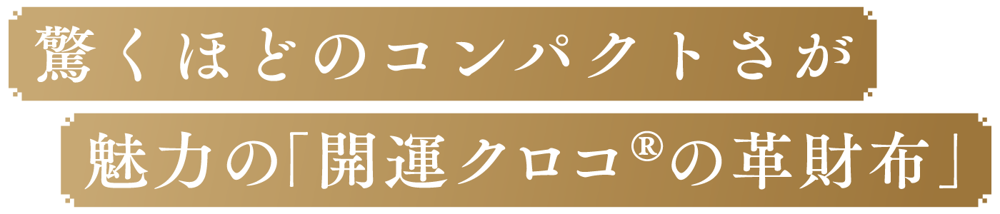
「開運クロコ® の革財布」 は、外側にクロコ革、内側に は牛革を使用しました。
外側 (クロコ革)

内側 (牛革)
今回のデザインは、シンプルかつ、驚くほどコンパクトです。 女性の手のひらに載るほど小さく、ポケットに財布を入れて 手ぶらで出かけることができます。

最近は、多くの店舗がキャッシュレス対応になり、ポイ ントカードなどもスマホアプリにまとめている方も多いで すよね。
そうなると、昔のように大きな財布が必要なくなり、ミ ニマムな財布に替えているという方も少なくありません。
この「開運クロコ®の革財布」は、薄さにも相当なこだ わりを持って作りました。
さらにカードなどを入れるポケットも充実させました。 手前に設けた2枚分のカードポケットのほか、コインポ ケットの下やカードポケットの裏にも隠しポケットがあ り、収納できるようになっているのです。

隠しポケットは、革自体が柔らかいので、カードを複数 入れることも可能です。通勤などで電車をよく使われる 方は、交通系ICカードを入れてお使いいただくのもいい と思います。
私は、カードポケットにはメインで使うクレジットカー ドなどを入れて、隠しポケットの部分には免許証や保険証 を収納しています。
ほかには、お札と小銭を少し入れておけばすぐに外出で きる、この軽快さがとても気に入っています。
クロコ革は、使えば使うほどどんどん馴染んで、 柔らか く、よりスリムになります。
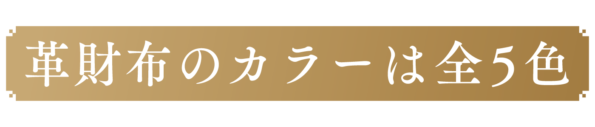

- 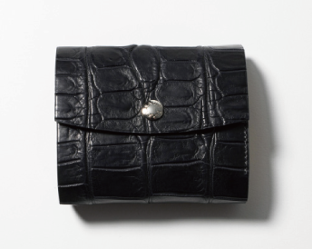
- 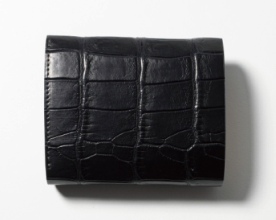
- 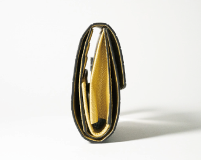
- 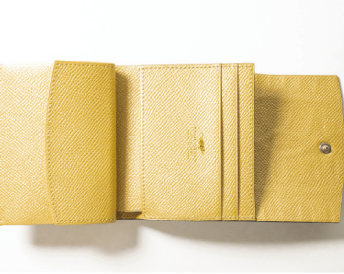
- 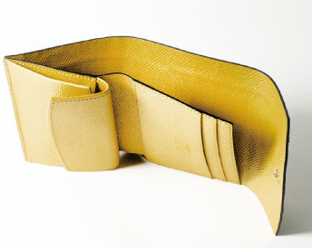
- 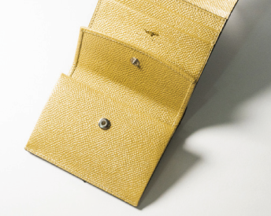
- 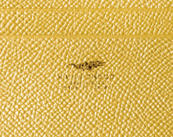
- 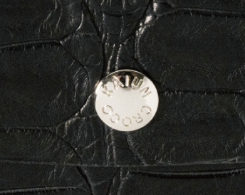
「ブラックダイヤモンド×シャンパンゴールド」は、ゴー ルドの部分にシボの牛革を使用しており、より高級感のあ るものになっています。
クロコダイルは縁起のよいものですが、そこにゴールド を配色したことによって、 さらに金運を引き寄せてくれる、 素晴らしいイメージの財布となりました。
色にはそれぞれエネルギーがあり、光り輝くゴールドに は良運をもたらす強い力が備わっています。また、人間の 心理として「ゴールド=貴重」という認識がありますから、 「貴重なものを手にしている」という気持ちが、より運気 を上げてくれるのです。
とはいえ、金運アップのためにはゴールドがいいかと言 えば、そうとも限りません。 要は、 持っていて自分自身の 気分がよいもの、テンションが上がる色、 ということがと ても大事なのです。
ご自分の好きな色、似合う色、自分のエネルギーに合っ ている色、もしくは自分のエネルギーに足りない色を入れ て補う、ということが重要になります。
- 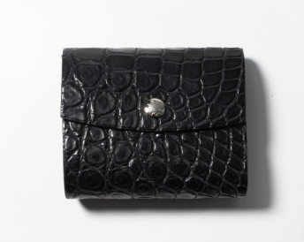
- 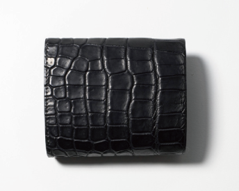
-

- 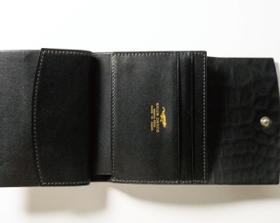
- 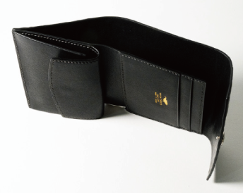
- 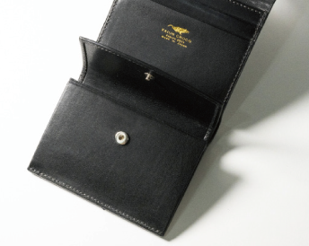
- 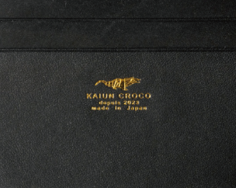
- 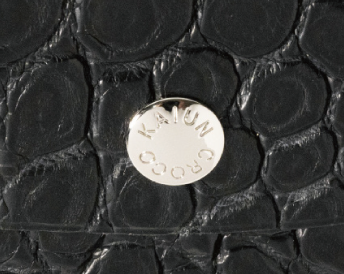
「ブラックダイヤモンド×ミッドナイトブラック」は、 王道をいく使いやすさが魅力です。男女問わずどんな服に も合わせやすいですし、汚れも目立たず、長く使えば使う ほど艶が出て、味が出てくるのもこの色ではないでしょうか。
どの色を選ぶか迷ったら、このブラックがイチオシです。 内側に刻印された、 「KAIUN CROCO」 のゴールドロゴが 目立つのも、ブラックダイヤモンドならではの特徴です。
- 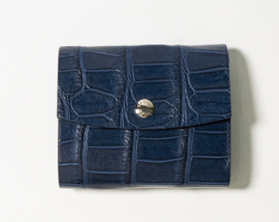
- 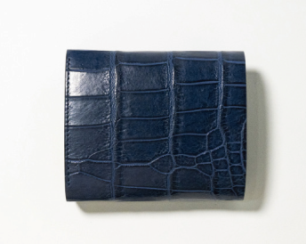
- 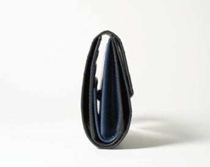
-

- 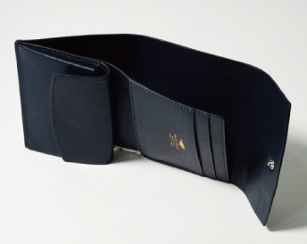
- 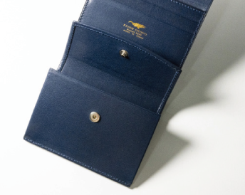
- 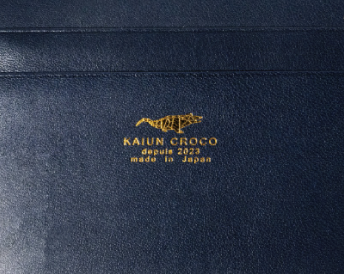
- 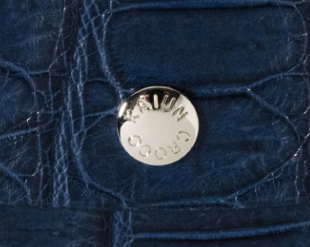
「ブルーサファイア」は、鮮やかな色が何よりの特徴。 つるつるとした光沢感が魅力です。
この「ブルーサファイア」は、水をイメージして作りま した。
ワニといえば水辺で生活する生き物ですし、龍神や蛇も 水を象徴するものです。 水神のご加護をも受けやすい色と いう印象があり、この色を選びました。
上品でありながら落ち着きのある色なので、テンション が上がってしまったときも、この色の財布を持つことで冷 静さを失わずに済みますし、 心を鎮めて散財を防いでくれ るパワーがあります。
- 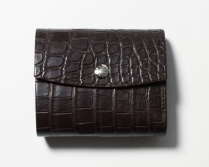
- 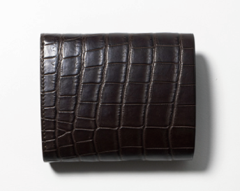
- 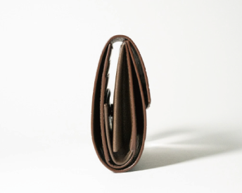
- 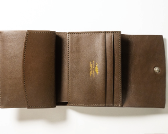
- 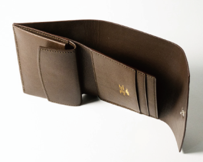
- 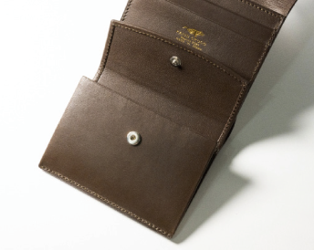
- 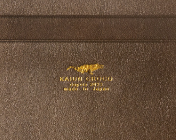
- 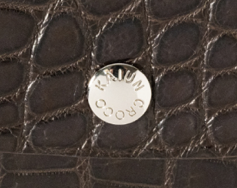
「ロイヤルブラウン」は、今回の制作カラーのなかでは いちばん希少なものになります。
茶色は、どんな服にも合わせやすい色なので、やわらか い雰囲気が好きな方におすすめです。
この色の特徴は 「土の色」 ということ。 ですから、グラ ウンディングというか、しっかりと地に足をつけて、大地 のエネルギーを取り込むようなイメージで作りました。
茶色も、心を穏やかにして落ち着かせてくれる色ですし、 黒よりも少し柔らかい印象になりますので、女性も使いやすいのではないかと思っています。
- 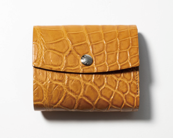
「アンティークキャメル」は、クロコ製品にしてはちょっ と珍しい色です。 じつはこの色は、 ゴールドを暗示してい るのです。
「開運クロコ® の革財布」には、「ブラックダイヤモンド ×シャンパンゴールド」の金色を使ったものもありますが、 もう少しカジュアルな印象でありながら、 ゴールドの強運 を暗示させてくれる色として、キャメルを選択しました。
ゴールドは確かに華やかではありますが、その派手さが 苦手という方には、このキャメルをおすすめします。
おしゃれ度も高い色なので、 ワンポイントとしてのおしゃ れを楽しみたい方にもぴったりなのではないでしょうか。
「開運クロコ®」には、内側にワニのロゴが刻まれています。 さらに、財布のフラップ部分には 「KAIUN CROCO」と 刻印した、オリジナルのボタンを付けました。
この「開運クロコ®」というネーミングは、 みなさんの『金 運が上がる』『いいことが起きる』『開運するように』とい う願いを込めてクロコダイル財布を製作したときにつけた ものです。